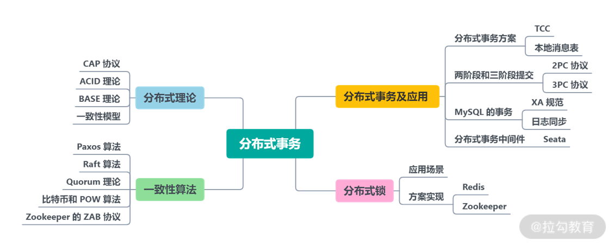

- 00 开篇词：搭建分布式知识体系，挑战高薪 Offer.md
- 01 如何证明分布式系统的 CAP 理论？.md
- 02 不同数据一致性模型有哪些应用？.md
- 03 如何透彻理解 Paxos 算法？.md
- 04 ZooKeeper 如何保证数据一致性？.md
- 05 共识问题：区块链如何确认记账权？.md
- 06 如何准备一线互联网公司面试？.md
- 07 分布式事务有哪些解决方案？.md
- 08 对比两阶段提交，三阶段协议有哪些改进？.md
- 09 MySQL 数据库如何实现 XA 规范？.md
- 10 如何在业务中体现 TCC 事务模型？.md
- 11 分布式锁有哪些应用场景和实现？.md
- 12 如何使用 Redis 快速实现分布式锁？.md
- 13 分布式事务考点梳理 + 高频面试题.md
- 14 如何理解 RPC 远程服务调用？.md
- 15 为什么微服务需要 API 网关？.md
- 16 如何实现服务注册与发现？.md
- 17 如何实现分布式调用跟踪？.md
- 18 分布式下如何实现配置管理？.md
- 19 容器化升级对服务有哪些影响？.md
- 20 ServiceMesh：服务网格有哪些应用？.md
- 21 Dubbo vs Spring Cloud：两大技术栈如何选型？.md
- 22 分布式服务考点梳理 + 高频面试题.md
- 23 读写分离如何在业务中落地？.md
- 24 为什么需要分库分表，如何实现？.md
- 25 存储拆分后，如何解决唯一主键问题？.md
- 26 分库分表以后，如何实现扩容？.md
- 27 NoSQL 数据库有哪些典型应用？.md
- 28 ElasticSearch 是如何建立索引的？.md
- 29 分布式存储考点梳理 + 高频面试题.md
- 30 消息队列有哪些应用场景？.md
- 31 集群消费和广播消费有什么区别？.md
- 32 业务上需要顺序消费，怎么保证时序性？.md
- 33 消息幂等：如何保证消息不被重复消费？.md
- 34 高可用：如何实现消息队列的 HA？.md
- 35 消息队列选型：Kafka 如何实现高性能？.md
- 36 消息队列选型：RocketMQ 适用哪些场景？.md
- 37 消息队列考点梳理 + 高频面试题.md
- 38 不止业务缓存，分布式系统中还有哪些缓存？.md
- 39 如何避免缓存穿透、缓存击穿、缓存雪崩？.md
- 40 经典问题：先更新数据库，还是先更新缓存？.md
- 41 失效策略：缓存过期都有哪些策略？.md
- 42 负载均衡：一致性哈希解决了哪些问题？.md
- 43 缓存高可用：缓存如何保证高可用？.md
- 44 分布式缓存考点梳理 + 高频面试题.md
- 45 从双十一看高可用的保障方式.md
- 46 高并发场景下如何实现系统限流？.md
- 47 降级和熔断：如何增强服务稳定性？.md
- 48 如何选择适合业务的负载均衡策略？.md
- 49 线上服务有哪些稳定性指标？.md
- 50 分布式下有哪些好用的监控组件？.md
- 51 分布式下如何实现统一日志系统？.md
- 52 分布式路漫漫，厚积薄发才是王道.md
13 分布式事务考点梳理 + 高频面试题
本课时我将和你一起梳理一下面试中分布式事务的高频考点，做到温故知新。
如何考察分布式事务
数据一致性和分布式事务是互联网分布式系统设计中必须要考虑的，所以对分布式事务的考察是中高级工程师面试必须跨过的一道门槛。
面试官通常会通过一个实际的系统设计题来展开提问，以考察候选人对分布式基础理论的理解、对各种数据一致性模型的掌握，以及对分布式下事务实现的原理、机制和各种实现手段的熟悉程度。
下面我模拟一个实际的面试场景，面试官可能会对你提出以下一连串的问题，你可以检测一下自己在学习中的掌握程度：
- 请说说你对分布式系统 CAP 理论的理解，CAP 分别代表什么含义？
- 为什么分布式系统的一致性和可用性不能同时满足？
- 你是如何理解数据一致性的？数据一致性有哪几种模型？
- 你在做系统设计时，如何选择实现强一致性还是弱一致性？
- 在你的项目里，是如何设计分布式事务，实现最终一致性的？
- 你了解数据库的 binlog 和 redolog 吗？是如何实现一致性的呢？
需要说明的是，面试并不是应试考试，很多问题并没有标准答案，不过这里的问题，很多都可以在“模块二：分布式事务”中找到思路。
分布式事务高频考点
在分布式事务的面试中，主要会围绕分布式理论、一致性算法、分布式事务及其应用来展开提问。下面我进行了简单梳理，这里有一张分布式事务的知识点思维导图，你可以对照这张图片，查漏补缺进行分析。

分布式理论部分的主要内容包括 CAP 理论、Base 理论、各种数据一致性模型的应用等。在工作中应用比较多的是 ZooKeeper，需要了解 ZooKeeper 的原理和实现、应用场景等。
一致性算法部分，希望你能够对经典的数据一致性算法，比如 Paxos 算法等有自己的理解，并不是要做到对算法细节倒背如流，而是要能够通过自己的描述，把算法的整体流程讲清楚。
分布式事务的应用是日常开发中打交道最多的部分，如果你在工作中实践过分布式事务的实现是最好的，若没有，可以去了解一些开源的分布式事务中间件。比如我在专栏中多次介绍过的 Alibaba Seata 等组件，通过学习开源组件设计思路，你也可以对这一部分内容有个整体的把握。
在专栏的第 [10]、[11]课时我们一起讨论了分布式锁的应用场景和实现细节，你可以回顾一下，使用 Redis 实现分布式锁，需要注意哪些细节呢？不同的实现方式，又存在哪些缺陷呢？
另外，除了专栏的内容，我推荐你结合一些经典的公开课程去学习，以加深印象，建议关注拉勾教育直播课哦，有许多分布式相关的主题分享。
© 2019 - 2023 Liangliang Lee. Powered by gin and hexo-theme-book.